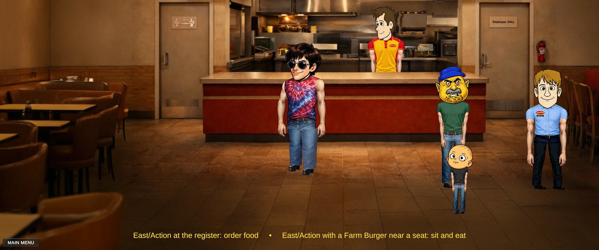
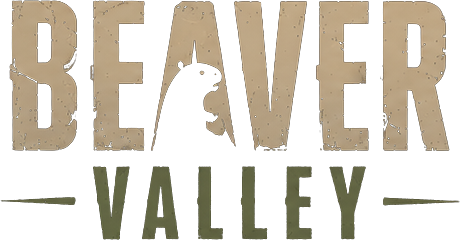
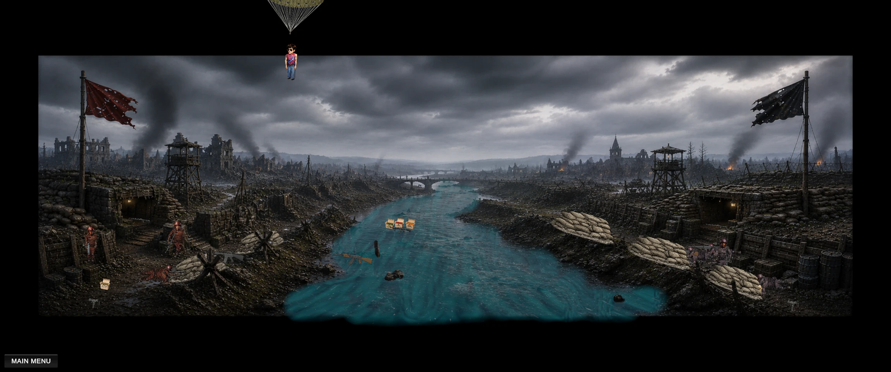
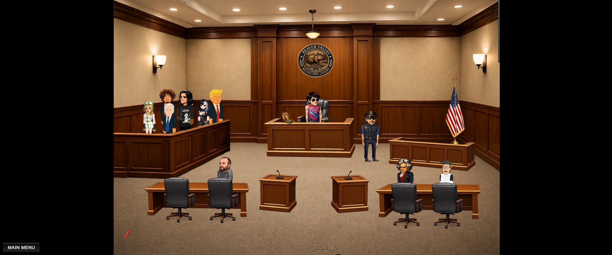
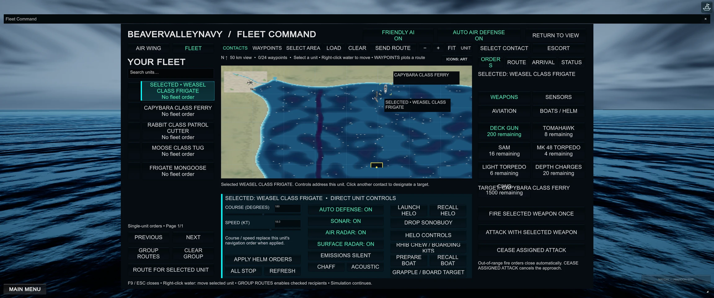

Story Mode
Choose a resident and explore on foot. Homes, jobs, travel, recruitment and encounters share the same world.


Walk the streets, join the band, or take a ship to sea.
Beaver Valley is a satirical role-playing game with side-scrolling, physics-driven fights. On the street, lining up your feet matters as much as reaching your opponent. A fight can carry through a doorway, and a witness can turn a scuffle into a police case.
The town has a two-hour timetable. A resident can leave work, visit a public venue and head home through the same doors you use. Recruit someone and their place in your party takes precedence over their routine. At home you can use a personal stash or rest to pass time and recover health.

Choose vocals, guitar, bass or drums. All four parts use a four-lane note highway, with taps, sustained notes and a combo multiplier. Start with a single song, then try a full set. The songbook also accepts your own music.
The game scores timing, accuracy and the notes you hold. Play from the main menu, or take a band member’s part at the bar. In the venue, the musicians and audience share the screen with your chart.

In The Last Ferry, the passenger ship is the objective. Pick a side and the available commands change with the mission. On a bridge, you can follow reported contacts on the chart, give another friendly vessel an order or switch to a shipboard station.
Other operations put you in a submarine or on a carrier. Aircraft, boarding parties and damage-control crews each have jobs to do. The mission editor lets you set starting forces and decide what counts as a win.

Choose a resident and explore on foot. Homes, jobs, travel, recruitment and encounters share the same world.

Set up opposing fighters with human or AI control and take them into an arena.

Assemble a squad, choose a battlefield and return to the Grand FOB for supplies, treatment and the next assignment.

Choose a cast for a trial. Testimony, arguments and the jury’s decision play out in court.

Investigate a death at Bellweather House. Examine physical evidence, talk to suspects and compare their accounts in your notebook.

Run a debate show with speaking hosts. Connecting Twitch brings live chat into the broadcast.

Build a deck and play for control of spaces on the board with character, item and location cards.

Choose the players, buy-in and blinds for a game of Texas hold’em with human or computer-controlled seats.

Choose a mission, side and available command, or build a scenario in the mission editor.

Play a four-lane chart for vocals, guitar, bass or drums. Choose your difficulty and take a song or set onstage.

Once in town, you can also train at Namasensei’s dojo, play the cabinets at James’s Barcade, catch a theatre performance, or join a show at the UNSE Club.
The investigator enters after the opening crime. Guests know different things about the people and rooms they saw. Keep track of their statements, the body and the physical evidence before naming a suspect.

Find the townspeople, officers, performers and ships’ crews in the cast directory. The specialist categories make it easier to find a particular role.